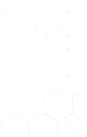


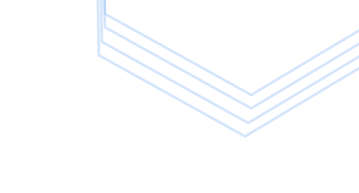
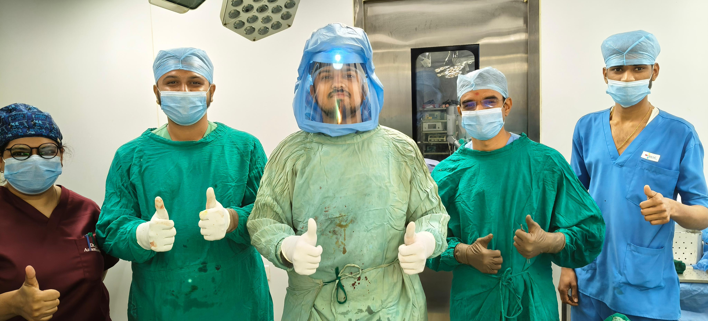
Over 6+ Years
Experience
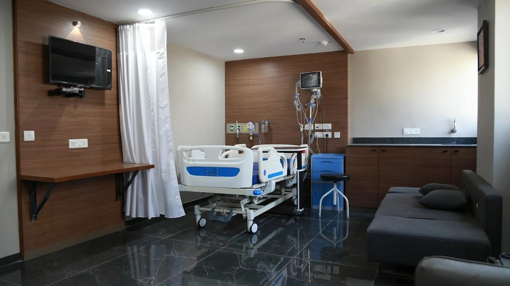
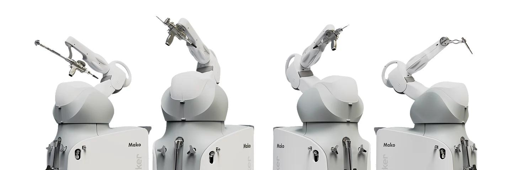
About ARTHROSE
ARTHROSE – Hip & Knee Care is a specialized orthopaedic care brand
Dr. Kathan Talsania completed his post-graduation and senior residency at MGM Hospital, Navi Mumbai, followed by a secondary DNB super-speciality at Apollo Hospital, Chennai, where he gained expertise in complex hip and knee surgeries, including revision and re-operative cases.
He began his robotic surgery journey in Chennai, advancing from basic training to robotic hip, partial, and total knee replacements. He further strengthened his expertise through fellowships in advanced arthroplasty and arthroscopic surgeries.
A major milestone was his exclusive fellowship in the Netherlands under renowned robotic surgeon Dr. Nanne Kort. There, he performed robotic joint replacements and learned world-class precision-based protocols. Inspired by this experience, he later named Arthrose, derived from Dutch, as a tribute to the excellence he gained.
After returning to India, he treated both Indian and international patients, with referrals from the UAE, USA, Canada, UK, Japan, Bangladesh, and parts of Africa. Today, he uses US FDA-approved implants, including advanced ceramic options, focusing on patient-specific solutions and delivering global-standard, personalized care.
Robotic Hip & Knee
200+
Robotic Total Knee Replacement
28+
Robotic Total Hip Replacement
180+
Robotic Partial Knee Replacement
450+
Total Knee Replacement
65+
Hip Replacement Surgeries
600+
Trauma Surgeries
130+
Arthroscopic Procedures
17+
Cartilage Repair & Transplant Surgeries
Premium Joint Replacement Systems
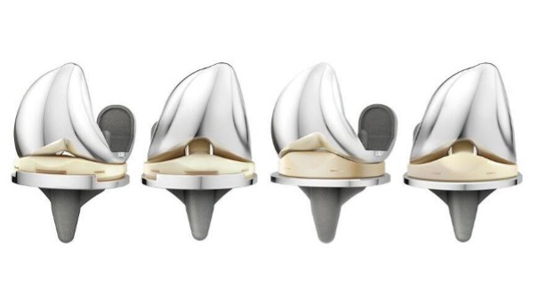
ATTUNE™ Knee
A modern knee replacement system designed for natural movement, better stability, and faster recovery.
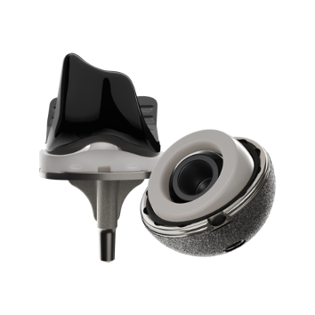
Oxinium
Advanced ceramic-coated metal that offers exceptional wear resistance and long-lasting joint performance.
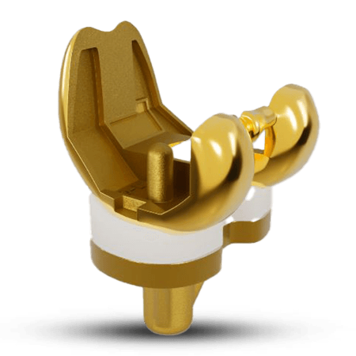
Opulent™
A high-precision knee implant engineered for smooth motion, strong fixation, and improved comfort.
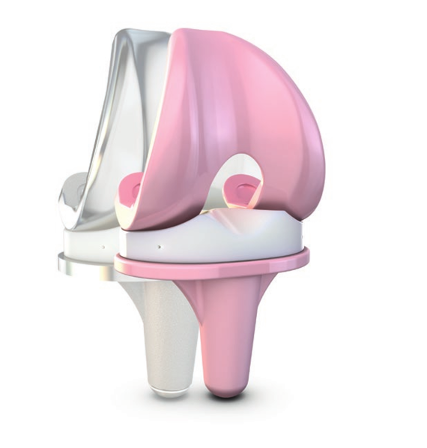
BPK-S Integration
A 3D-printed, highly porous hip implant that promotes natural bone growth for long-term stability.
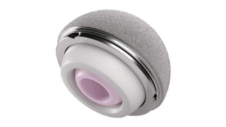
PINNACLE® Dual Mobility Liner
A hip replacement liner designed to reduce dislocation risk while allowing greater range of motion.
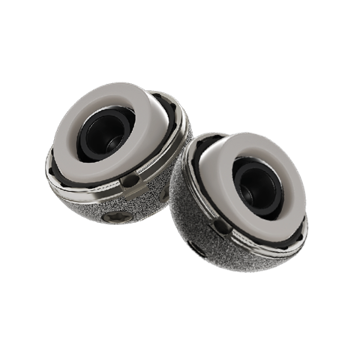
OR3O
A patient-specific knee implant customized to match individual anatomy for better fit and function.
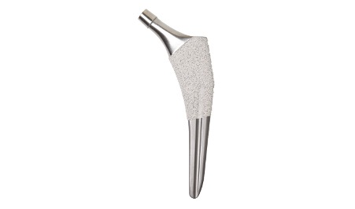
Accolade II
A flexible, bone-preserving hip implant that adapts naturally to different bone shapes for durability.
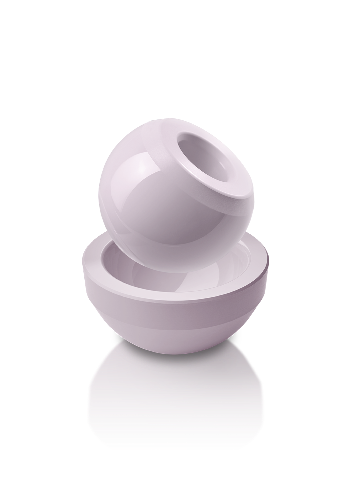
BIOLOX®delta
Premium ceramic components offering ultra-low wear, excellent smoothness, and long implant life.
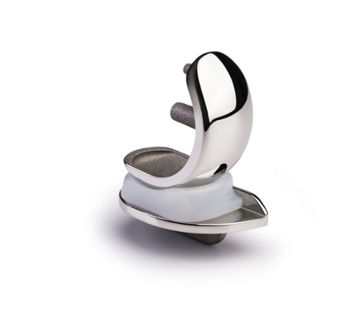
Oxford® Partial Knee
A minimally invasive knee replacement option that preserves healthy bone and enables quicker recovery.
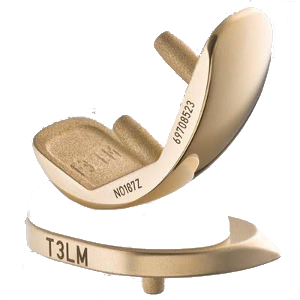
Opulent Gold Knee
An advanced coated knee implant designed for enhanced durability, smooth movement, and long-term performance.
Robotic Hip & Knee Surgeries
Robotic Knee Replacement
Advanced robotic-assisted surgery for precise knee replacement, ensuring better alignment and faster recovery.
Robotic Hip Replacement
State-of-the-art robotic hip replacement technology for improved accuracy and longevity of the implant.
Partial Knee Replacement
Minimally invasive robotic procedure targeting only the damaged part of the knee, preserving healthy tissue.
Knee & Hip Joint Replacement
Traditional yet effective joint replacement surgeries performed with expert precision and care.
Revision Joint Replacement
Complex surgery to replace or repair failed previous joint replacements, restoring mobility and function.
Knee & Hip Arthroscopy
Minimally invasive surgical procedure using an arthroscope to diagnose and treat joint problems.
Cartilage Repair & Joint Preservation
Techniques focused on repairing damaged cartilage and delaying or preventing the need for joint replacement.
Sports Injury & Arthritis Management
Comprehensive care for sports-related injuries and effective management strategies for arthritis pain.
CartiGrow and OssGrow Treatment
Regenerative medicine therapies like CartiGrow and OssGrow which help in regrowing cartilage and bone.
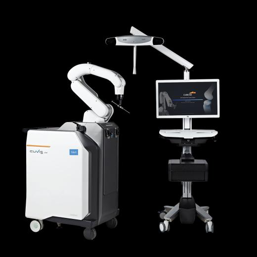
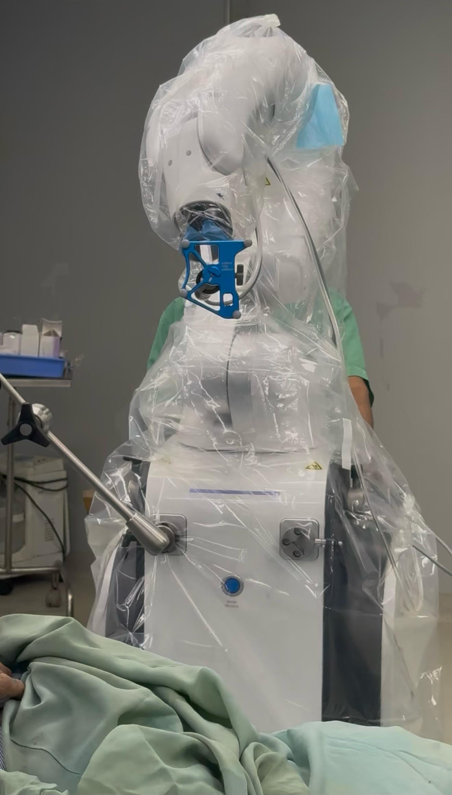
Why Choose ARTHROSE?
-
Exclusive focus on Hip & Knee joints
-
Robotic-assisted precision for accurate bone cuts, alignment, and soft-tissue balance
-
Minimally invasive philosophy promoting faster recovery and reduced pain
-
Personalized care pathways, not template-based surgery
-
International training and exposure to global best practices
-
Outcome-focused and ethical approach, prioritizing long-term joint health
ARTHROSE is designed for patients who seek global standards of care, whether they are local residents or international visitors.
15k Users Trust Arthrose Worldwide
Take the First Step Towards Pain-Free Movement
Trusted by Patients from many Countries

Your Questions are Answered
Can a robot really make my knee replacement more accurate than a surgeon’s hand?
Yes—because the robot does not replace the surgeon; it enhances the surgeon’s precision. Robotic knee replacement uses a 3-D plan of your knee anatomy and provides real-time feedback during surgery. This allows bone cuts and ligament balancing to be performed with sub-millimeter accuracy, resulting in a knee that feels more natural, moves better, and lasts longer.
Why is revision knee replacement considered more complex than the first surgery—and how is technology changing that?
Revision surgery is challenging because the anatomy is altered, bone stock may be reduced, and soft tissues are often compromised. Advanced planning tools and modern implants allow us to map bone loss precisely, restore alignment accurately, and improve stability. When done correctly, revision surgery can restore function and confidence—even after a failed previous replacement.
Are ceramic joints only for young patients, or are they better for everyone?
Ceramic components are not about age—they are about longevity and wear reduction. Ceramic surfaces produce significantly less wear debris, reducing inflammation and implant loosening over time. This makes them particularly valuable for active patients and those seeking a joint that can perform reliably for decades.
If only part of my knee is damaged, why should I replace the entire joint?
In many cases, you shouldn’t. Partial knee replacement preserves healthy bone, ligaments, and natural knee movement. With robotic assistance, we can identify exact damage and treat only the affected compartment—leading to faster recovery, better motion, and a knee that feels more “normal.”
Is it true that some hip replacements can be done without cutting major muscles?
Yes. The Direct Anterior Hip Replacement approach allows us to access the hip between natural muscle planes, minimizing muscle damage. This often results in less pain, faster walking, and quicker return to daily activities—while maintaining excellent implant positioning and long-term outcomes.
Traveling from abroad? How can you reach Arthrose team easily?
The Arthrose team is conveniently located and easily accessible from major international airports. Our team assists international patients with travel guidance, local transport directions, and appointment coordination to ensure a smooth and stress-free visit from arrival to treatment.
Working for Your Better Health.
Customer Support
Drop Us an Email